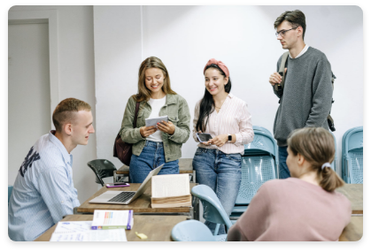

communication Sciences
Objective
/ Communication Sciences

STUDIES PROGRAM
The undergraduate course in Communication Sciences proposes a training course aimed at providing students with the basic skills necessary to exercise all professions in which communication plays a primary role (from journalism to editorial systems, from public communication to advertising), and this within the framework of a critical knowledge of the interaction between communication processes and the psychological, political, legal and economic phenomena that characterize contemporary society
To this end, the course of study is structured around a single curriculum that aims to enable the student to acquire:
(1) the linguistic-semiotic, bio-psychological, logical-informatic, socio-economic, historical-political and philosophical knowledge necessary to scientifically investigate the various forms of communication;
(2) the computer tools that today are the main vehicle for these forms of communication;
(3) own methods of media investigation and dynamics of use and consumption;
(4) the critical skills needed to analyze the historical, political, economic, social and legal contexts of communication processes.
This knowledge is complemented by laboratory activities (writing, media, electronic design, data analysis and communication, computer science) in relation to specific objectives and external activities, such as training internships in companies, as well as stays at universities in other European countries. under national and international agreements.
The course has a duration of three years and is articulated in n. 180 CFU. Access to the course is governed by an access test.